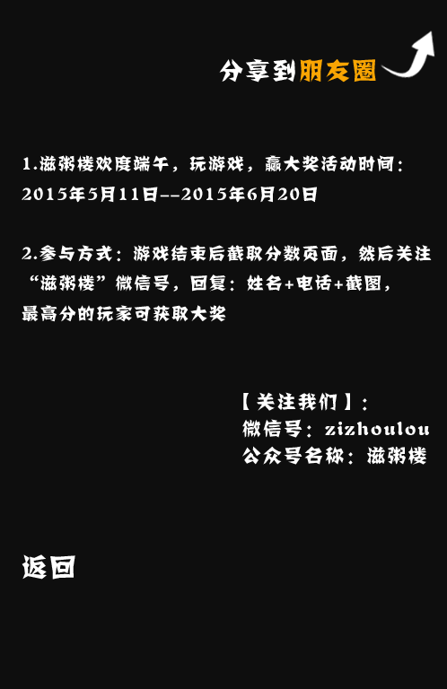

<!DOCTYPE html>
<html>
<head>
	<meta http-equiv="Content-Type" content="text/html; charset=UTF-8">
	<meta http-equiv="Content-Type" content="text/html; charset=UTF-8">
	<meta http-equiv="Content-Script-Type" content="text/javascript">
	<meta http-equiv="Content-Style-Type" content="text/css">
	<meta charset="utf-8">
	<meta name="description" content="game for iPhone">
	<meta name="keywords" content="iPhone,Android,iPad,game,html5 game,puzzle game,puzzle,Puzzle,flick,card,postman,post,action,Flash,Flash for iPhone,html5,iPod touch,iPad">
	<!-- Allow fullscreen mode on iOS devices. (These are Apple specific meta tags.) -->
	<meta name="viewport" content="initial-scale=1.0, maximum-scale=1.0, minimum-scale=1.0, user-scalable=no, target-densitydpi=device-dpi" />
	<meta name="HandheldFriendly" content="true" />
	<meta name="apple-mobile-web-app-capable" content="yes">
	<meta name="apple-mobile-web-app-status-bar-style" content="black">
	<meta http-equiv="Pragma" content="no-cache">
	<meta http-equiv="Cache-Control" content="no-cache">
	<meta equiv="Expires" content="0">

	<title>切粽子</title>
	<link type="text/css" href='{MODULE_URL}template/mobile/assets/softgames.css' rel="stylesheet">
	<style type="text/css">
	<!-- body {
		-webkit-user-select: none;
		margin: 0px;
		background: #000;
	}
	-->
	</style>
</head>

<body onLoad="startCutting();">
	<div id="fb-root"></div>
	
	<div id="c2canvasdiv">
		<canvas style="background-image: none;" id="c2canvas" width="320" height="480"></canvas>
	</div>

	<script type="text/javascript">
	window.gameLangs = ['en', 'es'];
	//window.gameJS = ['js/jquery-2.0.0.min.js'];
	window.gameJS = ['http://libs.baidu.com/jquery/2.0.0/jquery.min.js'];
	</script>
	<!--<script type="text/javascript" src='js/jquery-2.0.0.min.js'></script>-->
	<script src="http://libs.baidu.com/jquery/2.0.0/jquery.min.js"></script>
	<script type="text/javascript" src='{MODULE_URL}template/mobile/assets/softgames-1.1.js'></script>
	<script type="text/javascript" src='{MODULE_URL}template/mobile/assets/sg.hooks.js'></script>
	<script src="http://res.wx.qq.com/open/js/jweixin-1.0.0.js"></script>
	<script type="text/javascript">
	document.addEventListener("touchmove", function(e) {
		e.preventDefault();
	}, false);

	var mebtnopenurl = "{$settings['subscribe_url']}";

	window.shareData = {
		"imgUrl": "{MODULE_URL}icon.jpg",
		"link": window.location.hreff,
		"title": "{$settings['share_title']}",
		"desc": "{$settings['share_desc']}"
	};

	function submitScore(score) {
		if (score > 0) {
			alert("恭喜您的分数为" + score + "分！分享给你的朋友，让他们也来玩玩吧~！");
			// dp_share(score);
		}
	}

	function goHome() {
		window.location = mebtnopenurl;
	}

	function dp_submitScore(a, t) {
		// dp_share(t);
	}

	function dp_share(t) {
		document.title = "最新记录！切粽子！我连续切了" + t + "分！你能赢得了我吗？-滋粥楼";
		document.getElementById("share").style.display = "";
		window.shareData.tTitle = document.title;
	}

	function dp_Ranking() {
		//alert("到更多");
		// window.location = mebtnopenurl;
	}
	</script>

	<script type="text/javascript" src='{MODULE_URL}template/mobile/assets/game.js' async="async"></script>

	<!-- <div id=share style="display: none">
		
	</div> -->
	<script type="text/javascript">
	var jssdkconfig = {php echo json_encode($_W['account']['jssdkconfig']);} || {};
	// 是否启用调试
	jssdkconfig.debug = false;
	//
	jssdkconfig.jsApiList = [
		'onMenuShareTimeline',
		'onMenuShareAppMessage'
	];
	wx.config(jssdkconfig);
	wx.ready(function() {
		wx.onMenuShareAppMessage(shareData);
		wx.onMenuShareTimeline(shareData);
	});
	</script>

</body>

</html>
